1
Iniciar sesión
Ingresa con tu correo y contraseña. Llegarás al Dashboard de tu empresa.
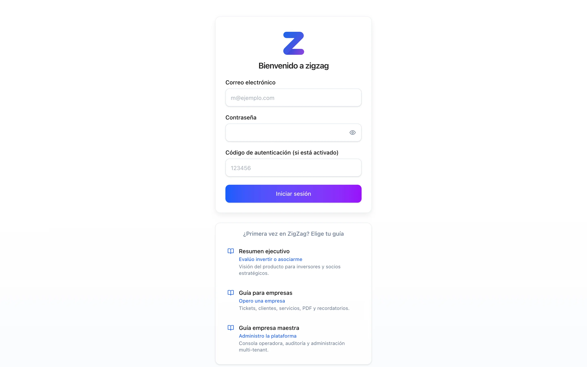
Clic para ampliarAprende a operar tickets de servicio, clientes, catálogo, cobranza y facturación PDF en ZigZag — con capturas reales del tenant de demostración ClimaTotal Demo.
Rol: Administrador / Operador de empresaCada empresa opera en su propio espacio aislado. La plataforma centraliza el flujo completo: desde la solicitud del cliente hasta la factura PDF, con auditoría y recordatorios.
Sigue este orden la primera vez que operes tu empresa:
Ingresa con tu correo y contraseña. Llegarás al Dashboard de tu empresa.

Clic para ampliarResumen de ingresos, tickets activos, gráfica de tendencia, estado de cobro y recordatorios.
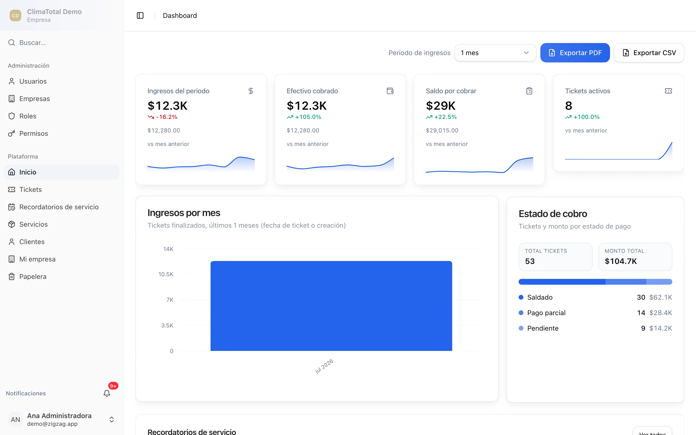
Clic para ampliarConfigura nombre comercial, RFC, logo y moneda antes de emitir facturas.
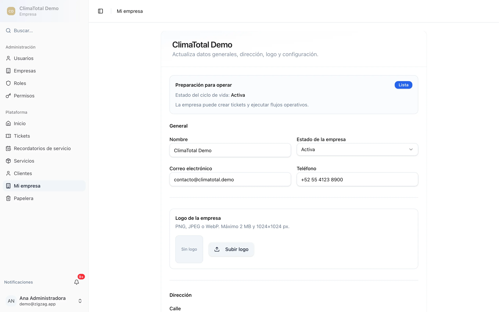
Clic para ampliarDefine servicios con precio y descripción para reutilizar en cada ticket.
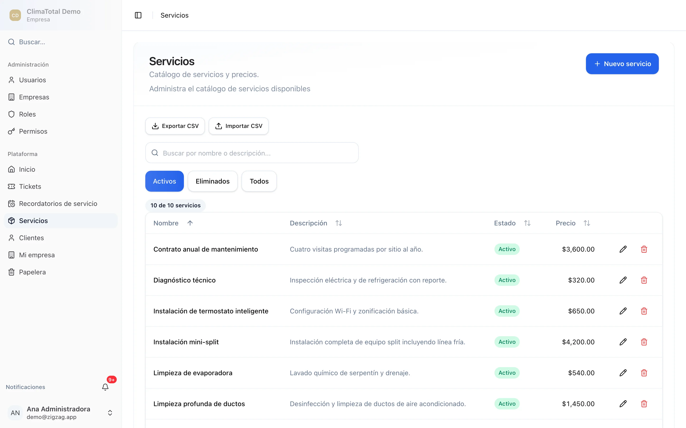
Clic para ampliarDirectorio de clientes con contacto; selección rápida al crear tickets.
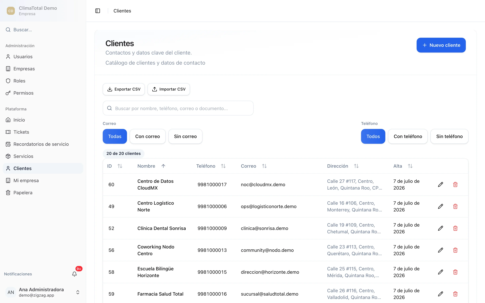
Clic para ampliarÓrdenes de servicio con estados de cobro: saldado, parcial o pendiente.
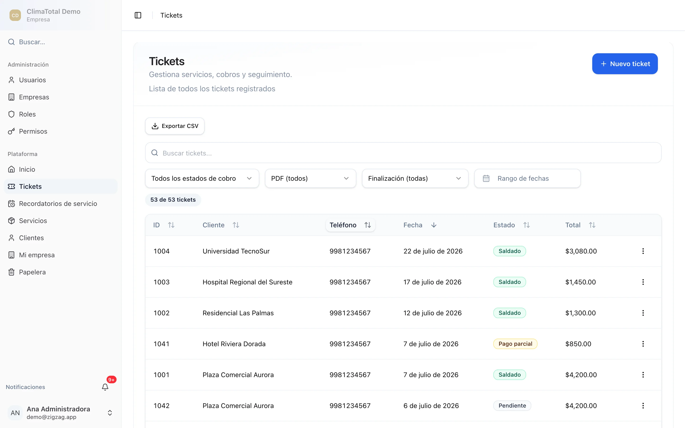
Clic para ampliarPulsa Nuevo ticket, elige un cliente del directorio y confirma con Crear Ticket. El flujo continúa en la pantalla de servicios.
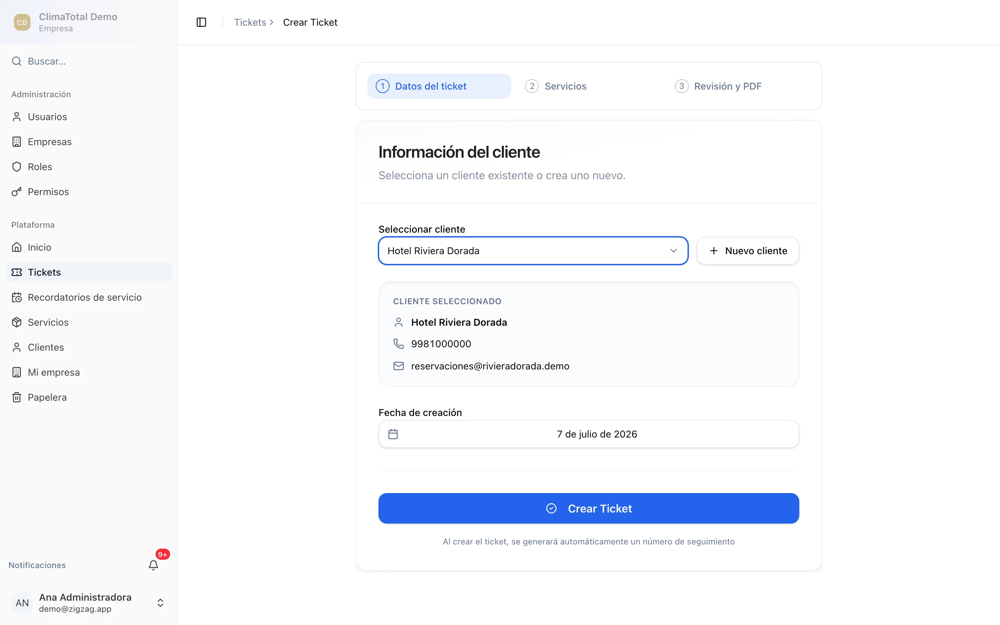
Clic para ampliarEn /tickets/{id}/services agrega líneas del catálogo con cantidad y precio. Continúa a revisión cuando el total sea correcto.
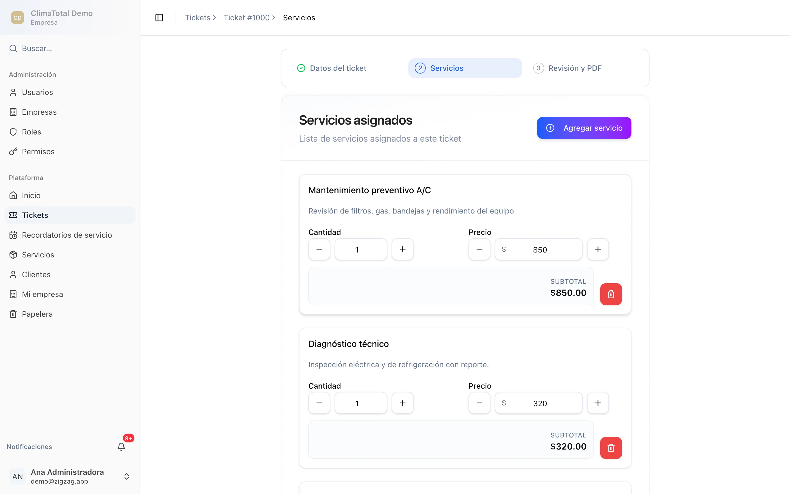
Clic para ampliarTicket #1000 · Hotel Riviera Dorada: servicios, pagos y botón Descargar PDF con logo y RFC de tu empresa.
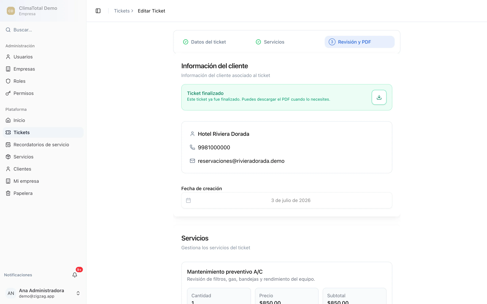
Clic para ampliarEl PDF se genera en el servidor al descargar — incluye logo, RFC, desglose de servicios y totales. Sin subir archivos externos.
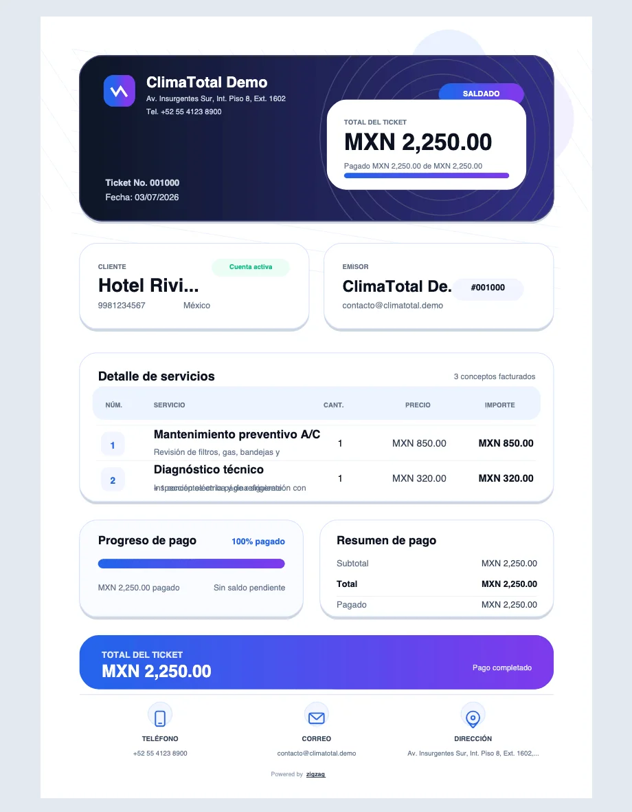
Clic para ampliarMantenimientos recurrentes clasificados en próximos, atrasados y pausados.
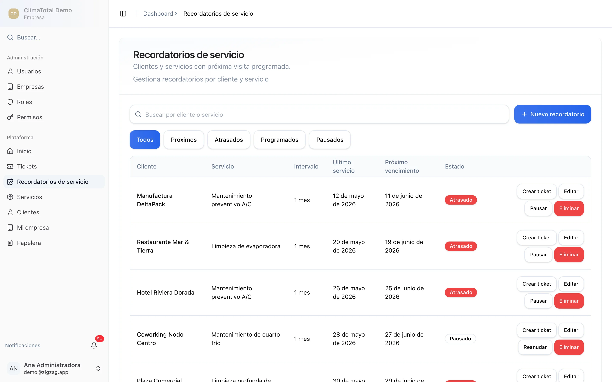
Clic para ampliarPerfiles Admin, Operator y Viewer con permisos por módulo (tickets, clientes, servicios, etc.).
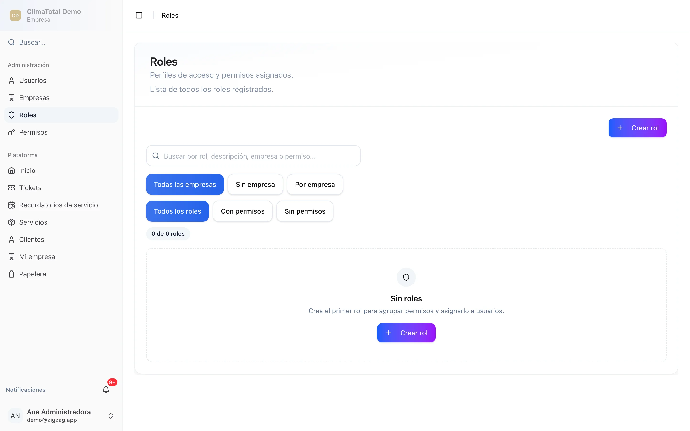
Clic para ampliarEn pantallas estrechas la app usa tarjetas, barra de acciones fija y menú lateral tipo sheet. Instala ZigZag como PWA desde el navegador.
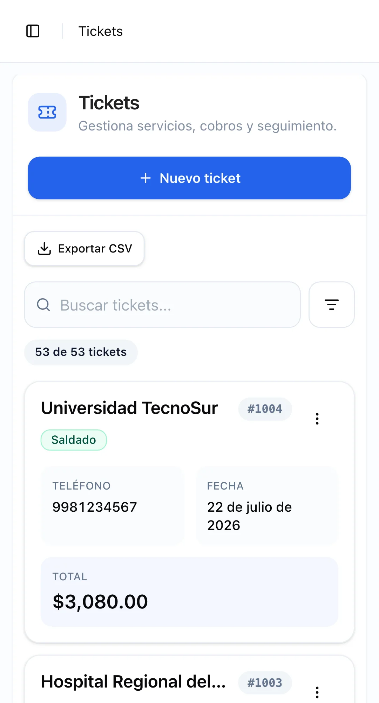
Clic para ampliarAtajo Ctrl+K (o ⌘+K) desde cualquier pantalla. Encuentra tickets, clientes y servicios en segundos.
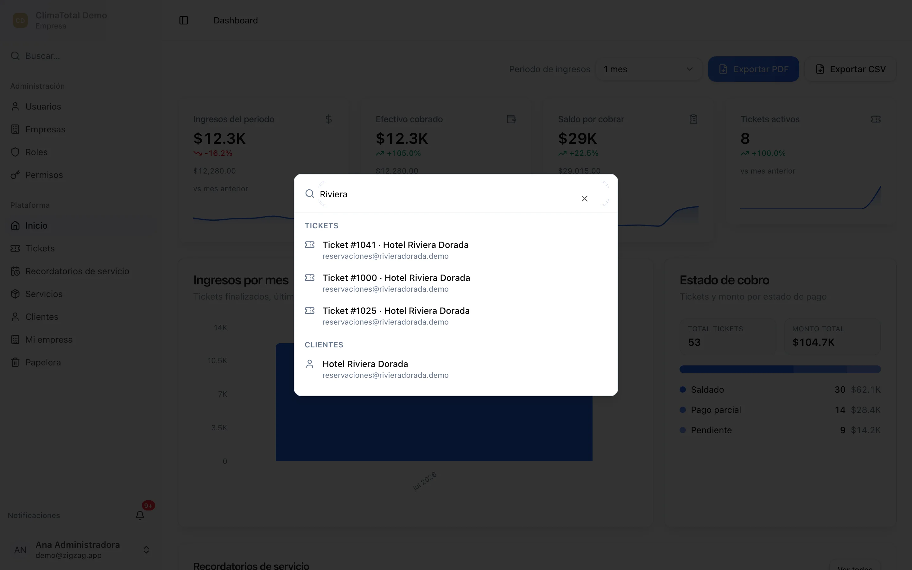
Clic para ampliarContacta al administrador de tu cuenta o al equipo de soporte de la plataforma.